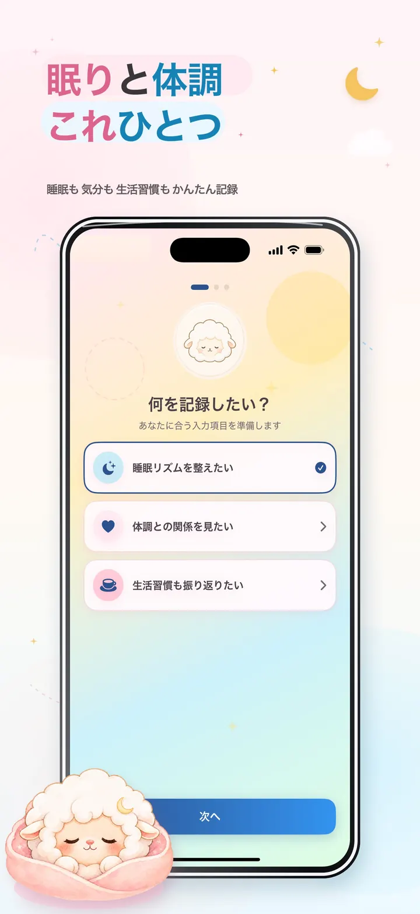
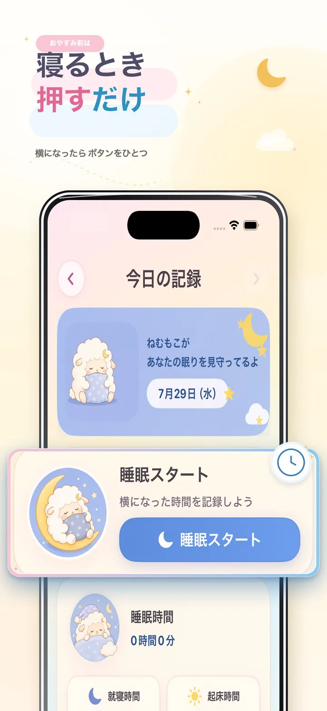
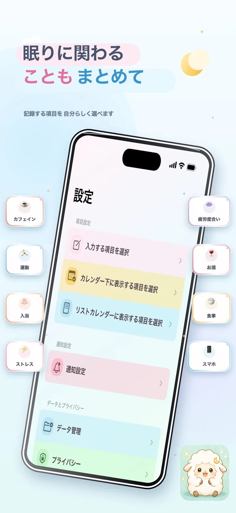
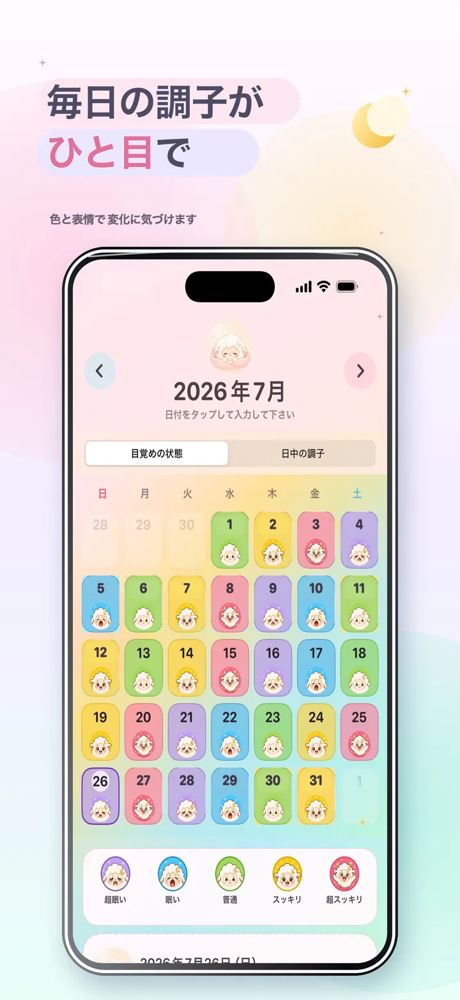
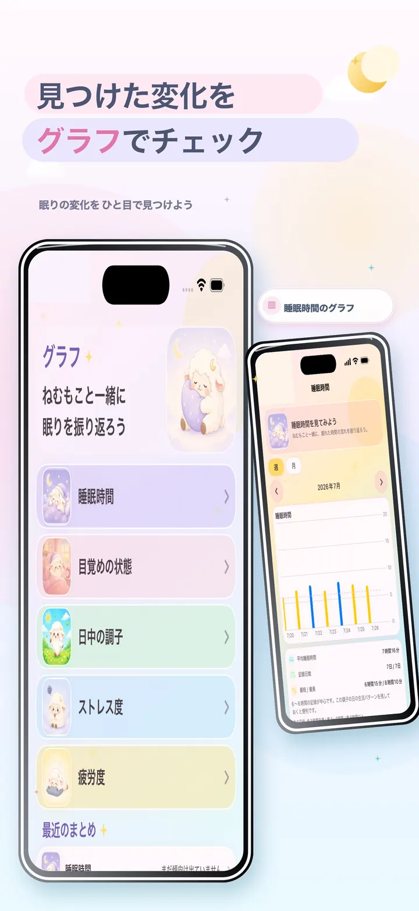
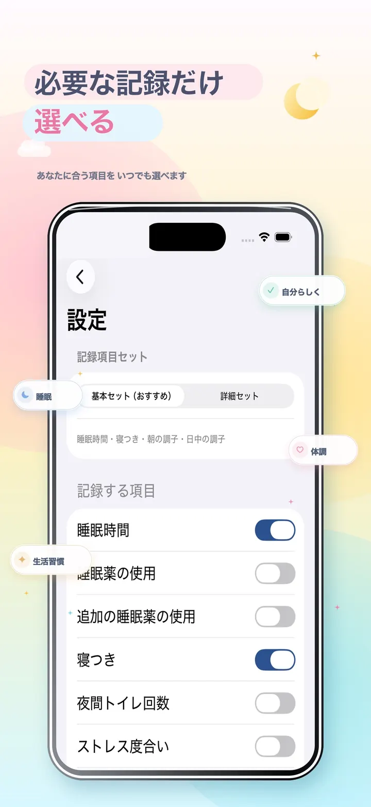

睡眠時間と寝つき
睡眠タイマーまたは手動入力で、就寝・起床時刻と睡眠時間を記録。寝つきの状態も、ねむもこの表情から選べます。
HOW TO USE
全部を入力しなくても大丈夫。自分に必要な項目だけを選んで、今日の状態を残せます。
横になるときに「睡眠スタート」。起きたらOFFにするだけで、就寝時刻と起床時刻を記録できます。
目覚め、日中の調子、生活習慣、ストレスや疲労など、振り返りたい項目だけを入力します。
カレンダーの色や表情、一覧、グラフから、日ごとの違いや続いている傾向を確認できます。
FEATURES
眠りは、日中の過ごし方やその日の体調と切り離して考えにくいものです。 ねむもこは、睡眠記録に関わる情報を一日ごとにまとめ、あとから見返しやすく整理します。
睡眠タイマーまたは手動入力で、就寝・起床時刻と睡眠時間を記録。寝つきの状態も、ねむもこの表情から選べます。
朝の目覚めと、日中を過ごしたときの調子をそれぞれ記録。似ているようで違う二つの感覚を分けて残せます。
カフェイン、運動、食事、飲酒、スマートフォン、入浴、リラクゼーションなど、眠りに関わりそうな行動をまとめます。
ストレス度合いと疲労度合いは別々に記録。選んだ状態がグラフにも同じ意味で表示されるように整理されています。
寝る前の睡眠薬と追加の睡眠薬を分けて記録できます。薬剤名は端末内に保存され、あとからその日の記録と一緒に確認できます。
基本セットと詳細セットから始め、記録する項目、カレンダーやリストに表示する項目をいつでも変更できます。
THE NEMUMOKO WAY
ねむもこは、睡眠を自動で評価したり、診断結果を示したりするアプリではありません。 自分で感じたことや生活の背景を、負担の少ない方法で記録し、振り返りを助けることを目指しています。
※以下は睡眠時間だけを残す簡易的なメモとの違いを示したもので、すべての睡眠アプリとの比較ではありません。
就寝時刻と起床時刻を中心に記録
睡眠・体調・生活習慣を同じ日に整理使わない項目も表示されることがある
必要な記録と表示項目を自分で選べる一日ずつ内容を開いて確認
表情カレンダー・リスト・5つのグラフA GENTLE RECORD
「昨日はよく眠れなかった」と感じても、眠りだけを見て理由を決めつけることはできません。 忙しさ、気分、カフェイン、運動、食事、入浴、スマートフォンの使い方など、 一日の過ごし方にはさまざまな要素があります。ねむもこは、それらを診断材料として判定するのではなく、 自分で振り返るための記録として同じ日にまとめます。
毎日すべてを入力する必要はありません。気になる項目だけの日があっても、 睡眠時間だけの日があっても大丈夫です。空欄を失敗として扱わず、続けられる範囲で残していくことを大切にしています。 記録項目はあとから変更できるため、生活の変化に合わせて使い方も調整できます。
カレンダーでは、目覚めや日中の調子を色とねむもこの表情で確認できます。 グラフでは、睡眠時間、目覚め、日中の調子、ストレス、疲労を期間ごとに振り返れます。 これは原因や病気を判断するものではありませんが、「最近はどうだったかな」と思い出すきっかけになります。
FOR YOUR DAYS
寝る前と起きたときのボタン操作を中心にしながら、必要な日は時刻を手動で直したい方へ。
目覚めだけでなく、日中の調子、ストレス、疲労などを分けて振り返りたい方へ。
カフェインや運動、食事、入浴など、その日に気になった行動を睡眠記録と一緒に残したい方へ。
使わない項目を減らし、自分に必要な内容だけが見える記録画面を作りたい方へ。
APP SCREENS
実際のアプリ画面を使った紹介画像です。iPhoneとiPadを切り替えてご覧いただけます。






横にスワイプして画面を見られます
PRIVACY & SAFETY
ねむもこは、睡眠・体調・生活習慣・服薬・メモの記録を端末内に保存します。 アカウントを作る必要はなく、これらの記録をねむもこ独自のサーバーへ送信しません。
広告表示と祝日情報の取得に伴う限定的な外部通信がありますが、 睡眠・体調・服薬・メモの内容を広告SDKや祝日APIへ渡しません。 詳細はプライバシーポリシーで分かりやすく説明しています。
プライバシーポリシーを見る日々の記録は、この端末のアプリ内に保存されます。
メールアドレスや会員登録なしで使い始められます。
保存した記録は、アプリ内のデータ管理から削除できます。
一般向けの記録アプリで、診断・治療・医療相談の代わりにはなりません。
睡眠・体調・生活習慣・服薬・メモの記録と、通知・表示設定はこの端末内に保存されます。
ねむもこ独自のサーバーへ記録内容を送信しません。広告と祝日表示に伴う通信については、プライバシーポリシーをご確認ください。
変更できます。基本セット・詳細セットから選ぶほか、記録、カレンダー、リストに表示する項目を個別に設定できます。
アプリ内のデータ管理画面から削除できます。アプリを削除した場合も、端末内のアプリデータは削除されます。
iPhoneとiPadに対応しています。端末の大きさに合わせた見やすいレイアウトで記録と振り返りができます。
ねむもこは日々の記録と振り返りを助ける一般向けアプリで、医療機器ではありません。体調や睡眠に心配がある場合は、医療専門職へご相談ください。